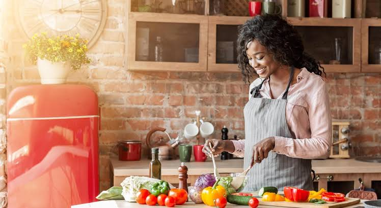

Minha trajetória na gastronomia nasceu do respeito pela culinária tradicional e do desejo de oferecer uma alimentação que une qualidade, nutrição e o verdadeiro sabor da comida feita em casa. Atuo no setor de produção e venda de refeições caseiras, priorizando rigorosamente a seleção de ingredientes frescos, naturais e de alta procedência.O objetivo deste projeto é entregar praticidade para a sua rotina sem abrir mão do padrão artesanal. Todo o processo de preparo segue rígidos padrões de higiene e dedicação, garantindo pratos equilibrados, saborosos e prontos para o consumo da sua família.Estou à disposição para atender às suas necessidades alimentares com o profissionalismo que você merece
